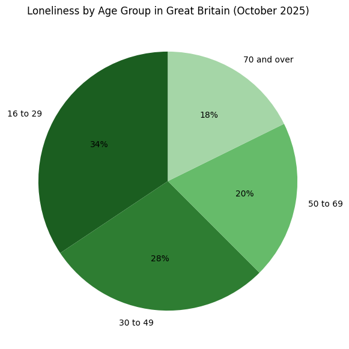

Note: this website is a mockup created for academic purposes.
The idea
Sportivity started from a simple frustration — moving to a new city and not knowing anyone to play sports with. It is evident that there is a rise of loneliness in our technological society. As shown in numerous studies, more and more younger generations are becoming increasingly estranged and in this day and age it is hard to find friends, let alone sport partners. There was no straightforward way to just find someone nearby who wanted to play tennis on a Saturday morning.
So we built one. We strive to use technology to connect people, instead of dividing them. Sportivity lets you create a profile with the sports you play and your skill level, and shows you other people nearby who are looking for the same thing. From there, you message them and figure out the details yourself. No algorithm deciding your schedule, no gamification — just people finding other people.

Marks
The following marks are used to identify the Sportivity brand and its services.
-
Word mark: Sportivity
The name "Sportivity" combines the word "Sport" and the word "Activity", suggesting activity, energy, and community. It is used to identify our platform and all services offered under it.
Nice classification: Class 9 (Computer and Software Products), Class 41 (Education and Entertainment Services), Class 42 (Computer and Software Services)
-
Word mark: SportMatch
"SportMatch" identifies our core matching feature, available to all users. It uses activity history, location, and sport preferences to suggest athletes you are likely to connect with. The name is a combination of the word "Sport" and the word "Match" and it reflects both the sports context and the act of pairing people together.
Nice classification: Class 9 (Computer and Software Products), Class 42 (Computer and Software Services)
-
Color mark
The colors
#1e7a1eand#e8f5e8are used consistently throughout the interface to highlight interactive elements and create a clear visual hierarchy. We make no claim over these colors in isolation and do not use any colors that have been trademarked by others. Color is never used as the sole means of conveying information.Nice classification: Class 9 (Computer and Software Products), Class 42 (Computer and Software Services)
-
Logo mark
The sign depicting a man running was freely downloaded from Vecteezy.com and is under licence which permits usage with appropriate attribution. We believe that the logo describes our platform very well. The placement of the logo is very flexible.
Nice classification: Class 9 (Computer and Software Products), Class 42 (Computer and Software Services), Class 35 (Advertising, Business and Retail Services)
Image credits
- Logo icon — running figure downloaded from Vecteezy.com, used under their free license which permits use with attribution.
- Basketball photo on the home page — by kalistro via Pexels.com
- App mockup screenshots — created by the Sportivity team using Canva
- Graph — created by the Sportivity team using Canva; based on information from this ©BBC News article
Note
- HTML and CSS assistance was provided by Claude by Anthropic (claude.ai), an AI assistant. All content was reviewed and adapted by the Sportivity team.